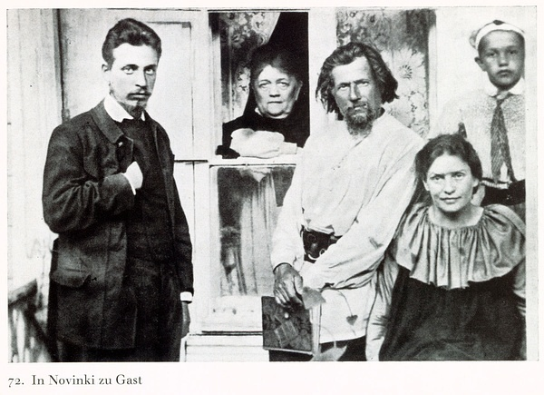

里尔克6首俄语诗（稿本A）+草稿2篇
【欢迎懂俄语的豆友们针对译文准确性砸板砖，欢迎不懂俄语的豆友基于受众心理学扔板砖】
【傻按：俄语拼写（并不同于当代俄语），诸家版本，多处俄语拼写大相径庭，《全集》中甚至出现了非俄语字母。由于Dasha目前未能目击里尔克的手稿，只好诸家版本互校，大致梳理。俄语拼写的讹误，责任在里尔克，在里尔克的女儿女婿，在《里尔克全集》的编者Zinn先生。
Sechs Gedichte für Lou Andreas-Salomé
(29. November – 7. Dezember 1900)
<I>
ПЕРВАЯ ПѢСНЯ.
.... Вечеръ. У моря сидѣла
дѣвочка, какъ мать сидитъ
у ребенка. Она пѣла,
и теперь она слышитъ
его сонное дыханіе;
видѣвъ миръ и упованіе
улыбается она:
не улыбка — это сіяніе,
праздникъ своего лица.
Дитя будетъ точно море
трогать даль и небеса, —
гордость твое или горе
шопотъ или тишина.
Берегъ его только знаешь,
и сидить тебѣ и ждать....
То и пѣсну запѣваешь,
и ничемъ не помогаешь
ему жить и быть и спать.
29. ноября 1900.
Шмаргендорфъ.
<II>
2. ПЪСНЯ.
Я иду, иду и все еще кругомъ
родина твоя, вѣтренная даль,
я иду, иду и я забылъ о томъ,
что прежде другихъ краевъ зналъ.
И какъ теперь далеко отъ меня
болъшые дни у южнаго моря,
сладкія ночи майскаго заката;
тамъ пусто все и весело и вотъ:
темнеетъ Богъ... страдающій народъ
пришелъ къ нему и бралъ его какъ брата.
1. Декабря 1900.
<III>
ПОЖАРЪ.
Бѣлая усадба спала,
да телѣга уѣхала
въ ночь, куда-то, знаетъ Богъ.
Домикъ одинокъ закрылся,
садъ шумѣлъ и шевелился:
послѣ дождя спать не могъ.
Парень смотрѣлъ ночь и нивы,
то летѣлъ, не торопясь,
между нами молчаливый
неоконченный разсказъ.
Вдругъ онъ замолкъ: даль сгорѣла
Вѣдь и небосклонъ горитъ...
Парень думалъ: трудно жить.
Почему спасенія нѣтъ? —
Земля къ небесамъ гладѣла,
какъ бы жаждала отвѣтъ.
5. Декабря 1900.
<IV>
УТРО.
И помнишь ты, какъ розы молодыя,
Когда ихъ видишь утромъ ранъше всѣхъ,
все наше близко, дали голубыя,
и никому не нужно грѣхъ.
Вотъ первый день, и мы вставали
изъ руки Божья, гдѣ мы спали —
какъ долго не могу сказать;
все былое былина стало,
и то что было очень мало,
и мы теперь должны начать.
Что будетъ? Ты не безпокойся,
да отъ погибели не бойся,
вѣдь даже смерть только предлогъ;
что еще хочешь за отвѣта?
Да будутъ ночи полны лѣта
и дни сіяющаго свѣта
и будемъ мы и будетъ Богъ.
6. Декабря 1900.
<V>
ЛИЦО.
Родился бы я простымъ мужикомъ,
то жилъ бы съ болъшимъ, просторнымъ лицомъ:
въ моихъ чертахъ не доносилъ-бы я
что думать трудно и чего нельзя
сказать...
И только руки наполнились бы
любовью моею и моимъ терпѣніемъ,
но днемъ работой-то закрылись-бы,
ночь запирала-бъ ихъ моленіемъ.
Никто кругомъ не бы узналъ, кто я.
Я постарѣлъ, и моя голова
плавала на груди внизъ, да съ теченіемъ.
Какъ будто мягче кажется она.
Я понималъ, что близко день разлуки,
и я открылъ, какъ книгу, мои руки
и оба клалъ на щеки, ротъ и лобъ...
Пустыя сниму ихъ, кладу ихъ въ гробъ, —
но на моемъ лицѣ узнаютъ внуки
все, что я былъ.... но всетаки не я;
въ этихъ чертахъ и радости и муки
огромныя и сильнѣе меня:
вотъ, это вѣчное лицо труда.
Nachts. 6. Dez.
<VI>
СТАРИКЪ.
Все на поляхъ; избушка, ужъ привыкъ
къ этому одиночеству, дыхаетъ
и лаская, какъ няня, потушаетъ
плачущаго ребёнка тихій крикъ.
На печкѣ, какъ бы спалъ, лежалъ старикъ,
думалъ о томъ, чего теперь ужъ нѣтъ, —
и говорилъ-бы, былъ-бы какъ поэтъ.
Но онъ молчитъ; дасть мирь ему господь.
И между сердца своего и ротъ
пространство, море... ужъ темнеетъ кровь
и милая, красавица любовь
идетъ въ груди болш' тысячи годовъ
и не нашла себѣ губы, — и вновъ
она узнала, что спасенія нѣтъ,
что бѣдная толпа усталыхъ словъ,
чужая, мимо проходила въ свѣтъ.
полдень, 7. Декабря 1900.
为莎乐美所写的六首俄语诗
1
第一歌
……黄昏。一位少女
坐在海边，如母亲坐在
孩子身边。她唱了歌，
此刻她在听
孩子静静的呼吸；
眼看着和平与希望
她在微笑：
不是微笑——而是光芒，
是她脸上的节日。
孩儿将像海一样
触动辽阔与长天，——
你的骄傲或者忧伤
喁语或者沉默。
你只知道他的岸，
你坐着、等待着……
即使你在唱歌，
也毫无助益于
他的生他的在他的睡。
2
第二歌
我走着，走着，周围始终是
你的故乡，多风的辽阔，
我走着，走着，我忘记了
我从前熟悉的别的国度。
此刻离我何其遥远啊
那南方海边的浩大日子，
五月落日的甜蜜的夜；
那里一切都虚空而愉快，这里：
上帝在暗去……苦难的人民
来到他身旁，视他为兄弟。
3
火灾
白色的农庄已沉睡，
马车行向黑夜，
去往何处，上帝才知道。
寂寞的村舍深锁，
花园簌簌又耸动：
雨后无法入眠。
小伙子望向黑夜与田地，
不疾不徐，在我们
之间飞过一个静静的
未完成的短故事。
突然他沉默了：远处失火了
地平线竟然在燃烧……
小伙子想：难以活下去了。
为什么那里没有拯救？——
大地向天空望去，
仿佛在渴盼一个答案。
4
清晨
你可记得玫瑰年轻的样子，
当你在早晨最先看见它们时，
我们的一切是近的，远方是蓝色的，
无人需要罪。
这是头一日，我们站起身
从上帝的手中，我们曾沉睡的地方——
睡了多久我不知道怎样说；
一切昔日的都变成了壮士歌，
曾经存在的非常少，
如今我们必须将之开始。
会发生什么？不要担心，
不要对陨落惧怕，
即使死也只是一个借口；
你还想要一个怎样的回答？
如果有夜，充满了夏天，
有昼，闪耀着光，
我们就会在，上帝就会在。
5
假如我生为一个简朴的农人，
我就会活着，有着巨大、空阔的脸：
没有向我的面容里搬运的是
难以想像的与无法
说出的……
唯有双手会充满
我的爱与我的忍耐，
在白天会被劳动所掩盖，
在黑夜会被锁在祈祷中。
周围无人知道我是谁。
我会变老，于是我的头
向下游到我的胸膛，仿佛伴着河流。
看上去是如此柔软。
我知道分离的日子近了，
我将双手像书一样敞开，
将它们放在面颊上、嘴上、额头……
将它们空空地带走，放在棺椁上，——
我的儿孙们会从我的脸上
认出我是谁……但那依然不是我；
这个面容里是欢乐与痛苦，
更庞大、更多过我本人：
看呐，这就是劳动永恒的脸。
6
老人
所有人去了田间；茅屋，如此习惯于
这种寂寞，呼吸着，
仿佛保姆，爱抚地平息着
哭闹着的孩子安静的哭声。
暖炉上，卧着一个老人，似乎在酣睡，
他思索着如今不复存在的事，——
如果他开口，就会像一个诗人。
但是他在沉默；主赐与了他平和。
他的心与他的口之间
是空间，是海……血已然暗去，
而美人，那妩媚的爱人
在他的胸中已经走了数千年，
却找不到唇，——再一次，
她知道，没有拯救者，
一群陌生的、疲于语言的
穷人，一旁而过，走进光里。
=====================================
遗物中发现的两篇手稿
<A>
Я такъ усталъ отъ тяжбы больныхъ дней
пустая ночь безвѣтренныхъ полей
лежитъ надъ тишиной моихъ очей.
Мой сердце начиналъ какъ соловей,
но досказать не могъ свой слова;
теперь молчаніе свое слышу я —
оно растетъ какъ въ ночи страхъ
темнѣетъ какъ послѣдній ахъ
забытаго умершаго ребенка.
<B>
Я такъ одинъ. Никто не понимаетъ
молчаніе: голосъ моихъ длинныхъ дней
и вѣтра нѣтъ, который открываетъ
болъшіе небеса моихъ очей.
Передъ окномъ огромный день чужой
край города; какой нибудь болъшой
лежитъ и ждетъ. Думаю: это я?
Чего я жду? И гдѣ моя душа?
两篇草稿
1
我变得如此孱弱，因染病日子的重负
无风的田地里空空的夜
停落在我的眼的寂静之上。
我的心像夜莺一样开始，
但无法说出自己的话语；
此刻我倾听着我的沉默——
它醒着，就像夜的恐惧
它暗去，就像最后一声叹息
属于一个被遗忘的死去的孩子。
2
我如此孤独。无人理解
寂静：我长日里的声音
没有风可以打开
我的眼的阔大天空。
窗前是巨大、陌生的日子
在城市的边缘；某种更庞大的什么
卧着、等待着。我想：那是我吗？
我在等待什么？我的灵魂在何处？
【傻按：俄语拼写（并不同于当代俄语），诸家版本，多处俄语拼写大相径庭，《全集》中甚至出现了非俄语字母。由于Dasha目前未能目击里尔克的手稿，只好诸家版本互校，大致梳理。俄语拼写的讹误，责任在里尔克，在里尔克的女儿女婿，在《里尔克全集》的编者Zinn先生。
|  |
Sechs Gedichte für Lou Andreas-Salomé
(29. November – 7. Dezember 1900)
<I>
ПЕРВАЯ ПѢСНЯ.
.... Вечеръ. У моря сидѣла
дѣвочка, какъ мать сидитъ
у ребенка. Она пѣла,
и теперь она слышитъ
его сонное дыханіе;
видѣвъ миръ и упованіе
улыбается она:
не улыбка — это сіяніе,
праздникъ своего лица.
Дитя будетъ точно море
трогать даль и небеса, —
гордость твое или горе
шопотъ или тишина.
Берегъ его только знаешь,
и сидить тебѣ и ждать....
То и пѣсну запѣваешь,
и ничемъ не помогаешь
ему жить и быть и спать.
29. ноября 1900.
Шмаргендорфъ.
<II>
2. ПЪСНЯ.
Я иду, иду и все еще кругомъ
родина твоя, вѣтренная даль,
я иду, иду и я забылъ о томъ,
что прежде другихъ краевъ зналъ.
И какъ теперь далеко отъ меня
болъшые дни у южнаго моря,
сладкія ночи майскаго заката;
тамъ пусто все и весело и вотъ:
темнеетъ Богъ... страдающій народъ
пришелъ къ нему и бралъ его какъ брата.
1. Декабря 1900.
<III>
ПОЖАРЪ.
Бѣлая усадба спала,
да телѣга уѣхала
въ ночь, куда-то, знаетъ Богъ.
Домикъ одинокъ закрылся,
садъ шумѣлъ и шевелился:
послѣ дождя спать не могъ.
Парень смотрѣлъ ночь и нивы,
то летѣлъ, не торопясь,
между нами молчаливый
неоконченный разсказъ.
Вдругъ онъ замолкъ: даль сгорѣла
Вѣдь и небосклонъ горитъ...
Парень думалъ: трудно жить.
Почему спасенія нѣтъ? —
Земля къ небесамъ гладѣла,
какъ бы жаждала отвѣтъ.
5. Декабря 1900.
<IV>
УТРО.
И помнишь ты, какъ розы молодыя,
Когда ихъ видишь утромъ ранъше всѣхъ,
все наше близко, дали голубыя,
и никому не нужно грѣхъ.
Вотъ первый день, и мы вставали
изъ руки Божья, гдѣ мы спали —
какъ долго не могу сказать;
все былое былина стало,
и то что было очень мало,
и мы теперь должны начать.
Что будетъ? Ты не безпокойся,
да отъ погибели не бойся,
вѣдь даже смерть только предлогъ;
что еще хочешь за отвѣта?
Да будутъ ночи полны лѣта
и дни сіяющаго свѣта
и будемъ мы и будетъ Богъ.
6. Декабря 1900.
<V>
ЛИЦО.
Родился бы я простымъ мужикомъ,
то жилъ бы съ болъшимъ, просторнымъ лицомъ:
въ моихъ чертахъ не доносилъ-бы я
что думать трудно и чего нельзя
сказать...
И только руки наполнились бы
любовью моею и моимъ терпѣніемъ,
но днемъ работой-то закрылись-бы,
ночь запирала-бъ ихъ моленіемъ.
Никто кругомъ не бы узналъ, кто я.
Я постарѣлъ, и моя голова
плавала на груди внизъ, да съ теченіемъ.
Какъ будто мягче кажется она.
Я понималъ, что близко день разлуки,
и я открылъ, какъ книгу, мои руки
и оба клалъ на щеки, ротъ и лобъ...
Пустыя сниму ихъ, кладу ихъ въ гробъ, —
но на моемъ лицѣ узнаютъ внуки
все, что я былъ.... но всетаки не я;
въ этихъ чертахъ и радости и муки
огромныя и сильнѣе меня:
вотъ, это вѣчное лицо труда.
Nachts. 6. Dez.
<VI>
СТАРИКЪ.
Все на поляхъ; избушка, ужъ привыкъ
къ этому одиночеству, дыхаетъ
и лаская, какъ няня, потушаетъ
плачущаго ребёнка тихій крикъ.
На печкѣ, какъ бы спалъ, лежалъ старикъ,
думалъ о томъ, чего теперь ужъ нѣтъ, —
и говорилъ-бы, былъ-бы какъ поэтъ.
Но онъ молчитъ; дасть мирь ему господь.
И между сердца своего и ротъ
пространство, море... ужъ темнеетъ кровь
и милая, красавица любовь
идетъ въ груди болш' тысячи годовъ
и не нашла себѣ губы, — и вновъ
она узнала, что спасенія нѣтъ,
что бѣдная толпа усталыхъ словъ,
чужая, мимо проходила въ свѣтъ.
полдень, 7. Декабря 1900.
为莎乐美所写的六首俄语诗
1
第一歌
……黄昏。一位少女
坐在海边，如母亲坐在
孩子身边。她唱了歌，
此刻她在听
孩子静静的呼吸；
眼看着和平与希望
她在微笑：
不是微笑——而是光芒，
是她脸上的节日。
孩儿将像海一样
触动辽阔与长天，——
你的骄傲或者忧伤
喁语或者沉默。
你只知道他的岸，
你坐着、等待着……
即使你在唱歌，
也毫无助益于
他的生他的在他的睡。
2
第二歌
我走着，走着，周围始终是
你的故乡，多风的辽阔，
我走着，走着，我忘记了
我从前熟悉的别的国度。
此刻离我何其遥远啊
那南方海边的浩大日子，
五月落日的甜蜜的夜；
那里一切都虚空而愉快，这里：
上帝在暗去……苦难的人民
来到他身旁，视他为兄弟。
3
火灾
白色的农庄已沉睡，
马车行向黑夜，
去往何处，上帝才知道。
寂寞的村舍深锁，
花园簌簌又耸动：
雨后无法入眠。
小伙子望向黑夜与田地，
不疾不徐，在我们
之间飞过一个静静的
未完成的短故事。
突然他沉默了：远处失火了
地平线竟然在燃烧……
小伙子想：难以活下去了。
为什么那里没有拯救？——
大地向天空望去，
仿佛在渴盼一个答案。
4
清晨
你可记得玫瑰年轻的样子，
当你在早晨最先看见它们时，
我们的一切是近的，远方是蓝色的，
无人需要罪。
这是头一日，我们站起身
从上帝的手中，我们曾沉睡的地方——
睡了多久我不知道怎样说；
一切昔日的都变成了壮士歌，
曾经存在的非常少，
如今我们必须将之开始。
会发生什么？不要担心，
不要对陨落惧怕，
即使死也只是一个借口；
你还想要一个怎样的回答？
如果有夜，充满了夏天，
有昼，闪耀着光，
我们就会在，上帝就会在。
5
假如我生为一个简朴的农人，
我就会活着，有着巨大、空阔的脸：
没有向我的面容里搬运的是
难以想像的与无法
说出的……
唯有双手会充满
我的爱与我的忍耐，
在白天会被劳动所掩盖，
在黑夜会被锁在祈祷中。
周围无人知道我是谁。
我会变老，于是我的头
向下游到我的胸膛，仿佛伴着河流。
看上去是如此柔软。
我知道分离的日子近了，
我将双手像书一样敞开，
将它们放在面颊上、嘴上、额头……
将它们空空地带走，放在棺椁上，——
我的儿孙们会从我的脸上
认出我是谁……但那依然不是我；
这个面容里是欢乐与痛苦，
更庞大、更多过我本人：
看呐，这就是劳动永恒的脸。
6
老人
所有人去了田间；茅屋，如此习惯于
这种寂寞，呼吸着，
仿佛保姆，爱抚地平息着
哭闹着的孩子安静的哭声。
暖炉上，卧着一个老人，似乎在酣睡，
他思索着如今不复存在的事，——
如果他开口，就会像一个诗人。
但是他在沉默；主赐与了他平和。
他的心与他的口之间
是空间，是海……血已然暗去，
而美人，那妩媚的爱人
在他的胸中已经走了数千年，
却找不到唇，——再一次，
她知道，没有拯救者，
一群陌生的、疲于语言的
穷人，一旁而过，走进光里。
=====================================
遗物中发现的两篇手稿
<A>
Я такъ усталъ отъ тяжбы больныхъ дней
пустая ночь безвѣтренныхъ полей
лежитъ надъ тишиной моихъ очей.
Мой сердце начиналъ какъ соловей,
но досказать не могъ свой слова;
теперь молчаніе свое слышу я —
оно растетъ какъ въ ночи страхъ
темнѣетъ какъ послѣдній ахъ
забытаго умершаго ребенка.
<B>
Я такъ одинъ. Никто не понимаетъ
молчаніе: голосъ моихъ длинныхъ дней
и вѣтра нѣтъ, который открываетъ
болъшіе небеса моихъ очей.
Передъ окномъ огромный день чужой
край города; какой нибудь болъшой
лежитъ и ждетъ. Думаю: это я?
Чего я жду? И гдѣ моя душа?
两篇草稿
1
我变得如此孱弱，因染病日子的重负
无风的田地里空空的夜
停落在我的眼的寂静之上。
我的心像夜莺一样开始，
但无法说出自己的话语；
此刻我倾听着我的沉默——
它醒着，就像夜的恐惧
它暗去，就像最后一声叹息
属于一个被遗忘的死去的孩子。
2
我如此孤独。无人理解
寂静：我长日里的声音
没有风可以打开
我的眼的阔大天空。
窗前是巨大、陌生的日子
在城市的边缘；某种更庞大的什么
卧着、等待着。我想：那是我吗？
我在等待什么？我的灵魂在何处？
![转发 29](https://www.douban.com/share/recommend?sanity_key=_68984&apikey=&object_kind=1015&name=%E9%87%8C%E5%B0%94%E5%85%8B6%E9%A6%96%E4%BF%84%E8%AF%AD%E8%AF%97%EF%BC%88%E7%A8%BF%E6%9C%ACA%EF%BC%89%2B%E8%8D%89%E7%A8%BF2%E7%AF%87&image=https%3A%2F%2Fimg9.doubanio.com%2Fview%2Fnote%2Fsmall%2Fpublic%2Fp223869542-2.jpg&target_action=0&redir=https%3A%2F%2Fwww.douban.com%2Fnote%2F223869542%2F&object_id=223869542&heading=%E8%BD%AC%E5%8F%91%E5%88%B0%E8%B1%86%E7%93%A3&target_type=rec&btn_text=%E8%BD%AC%E5%8F%91&href=https%3A%2F%2Fwww.douban.com%2Fnote%2F223869542%2F&action_props=%7B%22note_url%22%3A%22https%3A%5C%2F%5C%2Fwww.douban.com%5C%2Fnote%5C%2F223869542%5C%2F%22%2C%22note_title%22%3A%22%E9%87%8C%E5%B0%94%E5%85%8B6%E9%A6%96%E4%BF%84%E8%AF%AD%E8%AF%97%EF%BC%88%E7%A8%BF%E6%9C%ACA%EF%BC%89%2B%E8%8D%89%E7%A8%BF2%E7%AF%87%22%2C%22author_name%22%3A%22Dasha%22%7D&curl=&type=com.douban.people&properties=%7B%22href%22%3A%22https%3A%5C%2F%5C%2Fwww.douban.com%5C%2Fpeople%5C%2FDasha%5C%2F%22%2C%22name%22%3A%22Dasha%22%2C%22uid%22%3A%221666065%22%7D&desc=%E3%80%90%E6%AC%A2%E8%BF%8E%E6%87%82%E4%BF%84%E8%AF%AD%E7%9A%84%E8%B1%86%E5%8F%8B%E4%BB%AC%E9%92%88%E5%AF%B9%E8%AF%91%E6%96%87%E5%87%86%E7%A1%AE%E6%80%A7%E7%A0%B8%E6%9D%BF%E7%A0%96%EF%BC%8C%E6%AC%A2%E8%BF%8E%E4%B8%8D%E6%87%82%E4%BF%84%E8%AF%AD%E7%9A%84%E8%B1%86%E5%8F%8B%E5%9F%BA%E4%BA%8E%E5%8F%97%E4%BC%97%E5%BF%83%E7%90%86%E5%AD%A6%E6%89%94%E6%9D%BF%E7%A0%96%E3%80%91+%E3%80%90%E5%82%BB%E6%8C%89%EF%BC%9A%E4%BF%84%E8%AF%AD%E6%8B%BC%E5%86%99%EF%BC%88%E5%B9%B6%E4%B8%8D%E5%90%8C%E4%BA%8E%E5%BD%93%E4%BB%A3%E4%BF%84%E8%AF%AD%EF%BC%89%EF%BC%8C%E8%AF%B8%E5%AE%B6%E7%89%88%E6%9C%AC%EF%BC%8C%E5%A4%9A%E5%A4%84%E4%BF%84%E8%AF%AD%E6%8B%BC%E5%86%99%E5%A4%A7%E7%9B%B8%E5%BE%84%E5%BA%AD%EF%BC%8C%E3%80%8A%E5%85%A8%E9%9B%86%E3%80%8B%E4%B8%AD%E7%94%9A%E8%87%B3%E5%87%BA%E7%8E%B0%E4%BA%86%E9%9D%9E%E4%BF%84...){kind=link}
![[已注销]](./里尔克6首俄语诗（稿本A）+草稿2篇_files/user_normal.jpg)
.............
. .
.............
"俄语拼写的讹误，责任在里尔克，在里尔克的女儿女婿，在《里尔克全集》的编者Zinn先生。" 哈哈
喜欢6
提个意见
如这句：孩子静静的呼吸
能否在汉语翻译中尽量避免使用“静静的”“白白的”“亮亮的”这样的叠词
在汉语写作中，这样写是不合汉语习惯的，除非在小学作文里
但现在大量翻译都这样翻译形容词，个人觉得并不好

Dasha兄，这六首歌里，3和5我最喜欢，有我最喜欢的里尔克的质地，这两首歌你的翻译我也最喜欢。
6中的：“一旁而过”，我木了，未解：）
草稿2：
我的眼的阔大的天空
不如：“我的眼的阔大天空”
Dasha, 谢谢你的解释. 我只是好玩, 没挑刺的意思.
Dasha兄，“一旁而过”，我现在读惯了，而且可以模仿山羊胡单片镜长衫先生背着一首吟咏：一 旁 而 过
Dasha君辛苦啦，如此不堪的语法看着都累。。。
原文校勘确实有几个小问题，主要我估计是印刷的错吧，分不清软、硬音符和ять，还有一个地方出现了песну，我猜测至少不是里尔克的问题。。。
译文的话，还是吹毛求疵找点小问题吧
I
第一、二首里的даль译作“辽阔”或许不太妥当，这里用“远方”的原意似乎完全可以，第三首里就改成“远处”了。
и сидить тебѣ и ждать....不知道用тебѣ是里尔克语法不精还是如何，但如果他的确有意如此的话，我觉得或许有必要强调一下其中被迫的成分，即“你只能坐着等待”这样。
помогаешь ему жить и быть и спать. Dasha君译作“他的生他的在他的睡”是为了和原文在语音上接近吗？不过原文毕竟是动词为主，如果要强调单音节，或许——“帮助/他生、在、睡”这样？
III
关于телега我们好像讨论过？不过好像是讨论构造的问题？不过我总是觉得如果单叫“马车”的话，总让人感觉是贵族乘的豪华马车，不会想到这是农村里的运货车。我也不知道怎么译比较妥帖，或许“干草车”？“牛车”？
IV
关于да будут...的句式和创世纪的关系我记得我们似乎也讨论过？我怎么记得仿佛就是这首诗？
V
标题漏译了。。。
“没有向我的面容里搬运的是/难以想像的与无法/说出的……”
这段汉译似乎有些不通顺？或者是我没有能理解。窃以为这句话原文主语还是挺清晰的，就是“我”，即使前文已经提到“我”，那这里一开始的“没有”也比较奇怪。如果散文直译的话，觉得应该就是“我就不会给我的面容带去/想不通的和说不出的东西”。另外我十分怀疑这个сказать分行是校勘或者印刷错误。。。
“在白天会被劳动所掩盖，/在黑夜会被锁在祈祷中。”窃以为最好还是要突出以下“双手”是主语，便于汉语读者理解——类似“在白天它们被劳动所掩盖，/夜将它们锁在祈祷中”这样。
“看上去是如此柔软”似乎作“仿佛比看上去更柔和”这样，更契合原意。
Пустыя сниму ихъ, кладу ихъ въ гробъ, —
но на моемъ лицѣ узнаютъ внуки
все, что я былъ
不知Dasha君如何理解这三句？
我总觉得逻辑应该是这样的——他要把手遮住脸，可是孙子还是都认出了他，可是里尔克明明用了“снять”和“но”，我实在无法理解其中的逻辑关系：
“我要放下空虚的双手，我要把它们放入棺材——但是我所有的孙子都将从我脸上，认出我曾是什么”
огромныя и сильнѣе меня
请注意一下第一个огромные不是比较级，应该是修饰前面的радости и муки的。
VI
дасть мирь ему господь
似乎强调一下“将来”比较好。不过不排除里尔克用词时不能感受到完成体的这种语义
бѣдная толпа усталыхъ словъ,
чужая, мимо проходила въ свѣтъ
我的理解——толпа不宜解作人群，因为后面的усталый并非“因…而劳累的”，而就是“劳累的”之意。所以大概应解作“一大坨疲惫的话语”这样。
B
какой нибудь болъшой
如果按正常俄语语法来解的话，阳性不定代词单用应该是指人（中性指物），不过不知道里老师此处是怎么想的。。。
以上~~
哎哟，我那个玩笑话，Dasha君切莫当真。
【嗯，这个ты的给予格很让Dasha费思量，爵爷这个“只能”真的很好。 】
这其实是大二精读课上老师说的，这种情况往往是省略了某个谓语副词，можно, надо, необходимо之类，而且通常是надо之类表被迫的。
【讨论贴在https://www.douban.com/note/206355868/，但找不到爵爷的回复在哪儿了。没读多少俄汉对照作品，也一直犹豫译成什么，要不还音译成“铁列驾”？ 】
抱歉我这两天在赶呆得烂，等赶完后再来拜读，我记得我们似乎是在留言板讨论的？无所谓啦，反正当时也没说出个所以然。如果是我的话，也许会用“牛车”，虽然有时候它也会用马拉，但是肯定不会像马车那样疾驰，否则估计这破车会散架吧。然后一用“牛”，这缓慢的速度和运货的属性都表现出来了。而“铁列驾”似乎总让人觉得有种钢铁战车的味道？
另外wiki铁列驾的英文页面里说与wain近似，点进wain就是康斯特布尔的《干草车》。。。
【不是里尔克“不能感受到完成体”，是Dasha“不能感受到完成体”，学习了。】
额，我发现我说得不太精确，“完成体将来时”，也许翻译时容易疏忽的不在“完成体”，而是在“将来时”上。
话说敝校某历史比较语言学老师对俄语的评价就是：动词实在是太难了，难就难在没有理性，完全无法捉摸之上……
【重读了一下，确实，这句话的格很让Dasha不解，经爵爷开示，明白了，是汉语所谓的“量词”，“бѣдная толпа”=“一大坨”，感谢，感谢。 】
我似乎漏了бѣдная，确切的说，是“苍白的一大坨疲惫的话语”，照汉语习惯，大概就是“一大坨苍白疲惫的话语”吧。
蒙Dasha君指出，公爵老眼昏花，错将бѣдный看成блѣдный。。。当解作“穷困的”、“贫乏的”。。。

是Dasha让爵爷累眼花了，深表感激。等闲下来，没准儿Dasha译一下里尔克译成德语的Igor，让爵爷开心呢
呵呵，目测这么好的题材，完全可以做个“伊戈尔译文比较研究，以里尔克和纳博科夫为例”，申请100亿的社科基金啊！
Dasha的最新日记 · · · · · · ( 全部 )
- “二”从何来——略论意译 (39人喜欢)
- 里尔克2首意大利语诗草【求板砖】 (23人喜欢)
- 里尔克1901年1月24日夜写给褒拉的信 (24人喜欢)
- 唉，意译 (12人喜欢)
- 绘画之于诗人里尔克 (144人喜欢)
热门话题 · · · · · · ( 去话题广场 )
- 我家自有清凉法 331.1万次浏览
- 回想高考后的漫漫长假 236.9万次浏览
- 我家的床头柜替代方案 96.8万次浏览
- 看展记 9941.3万次浏览
- 豆瓣野生艺术摄影大赛 2050.2万次浏览
- 录取通知书盲盒大赏 新话题
- 影视剧中那些离谱的“主角光环” 新话题 · 611次浏览
- 30天码字「不断更」计划 1551次浏览
- > 我被邀请参与的话题(0)
- + 发起新话题